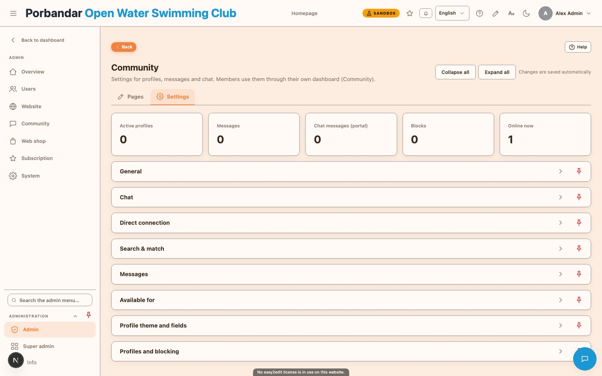
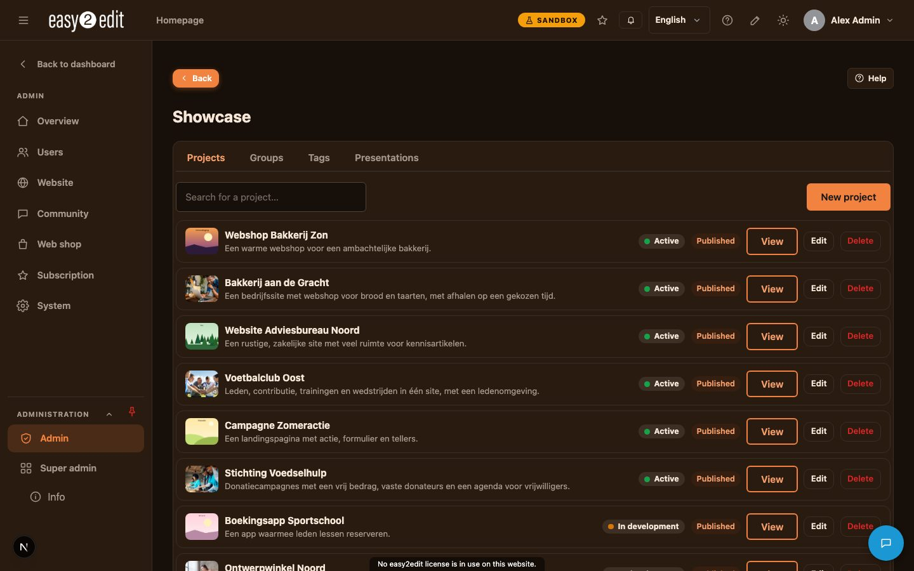

8. Community, marketplace, agenda, documents and games
This chapter covers the plugins that turn your site into a place where members connect, trade, plan, share files and play. Together they can power a full community or dating site, a marketplace, a shared calendar, a document library and a small games arcade.
Video: Community and marketplace (English voice-over also in Nederlands)

Community overview#
The Community plugin bundles everything you need for a community or dating site: profile pages with photos, a member search, blocking, discovery (liking, matching, favourites, visitors), private messages, chat, and a direct WebRTC connection using a code, link or QR code. It also supports profile themes, profile fields and "available for" options.
When parts of the community require a subscription or donation, Community works together with the Subscriptions plugin to handle access.

Profile themes#
Profile themes define which fields and filters appear on member profiles. Ready-made packages are included for Sporters, Dating, Business and Webshop, and you can install or remove them as needed. You can also build your own theme with custom fields, visibility settings and search filters.
The superadmin decides which themes are available for admins and users to choose. Themes can be exported and imported as JSON, which makes it easy to reuse a theme on another site.
Profiles and blocking#
Each member gets a profile page with multiple photos. Visibility can be set per language and per group, so you control who sees what. The member search helps users find each other, and members can block other users they do not want contact with.
Discover: searching and matching#
The discover feature works like a dating site: members can search with filters, see recommendations, like other profiles, get matches, save favourites and see who has visited their profile.
Messages and chat#
- Messages: a private messaging system between members, with its own inbox.
- Chat: chat in a popup or full screen, either through the portal or directly between members using WebRTC, including photos, video and video chat.
Direct connection#
Direct connect sets up a direct WebRTC connection between two people using a code, link or QR code, without needing an account. It supports chat, photos, video and video chat, and is available on the pages /directconnect and /direct.
Marketplace#
In the marketplace, members can offer products, services or anything else for sale, with a theme and images. Three sale types are supported:
- A fixed price.
- Bidding, starting from a minimum price, with bids visible to all members.
- A booking, for example an appointment or a sign-up for an event.
Agenda#
The agenda gives users and groups their own calendar. It supports:
- Personal appointments.
- Appointments with other members, including invitations, confirmations or proposing another time.
- Group appointments.
- Events created by administrators, which can be placed on pages as a system object.
Reminders and notifications keep members informed, and a tile on the dashboard gives a quick overview of upcoming items.
Document management#
Documents can be uploaded into a folder structure, with tags, versions and access rights set per user or per group. Files are stored on the server or on S3, and can be encrypted. Blocks are available to show documents directly on pages.
Games#
The games section gives members a small games arcade. Each game is its own package, a folder or zip containing a game.json file, placed in the games folder of the plugin. Every game has its own configuration for administrators and its own settings per member. Games run in a sandboxed, isolated way and save scores and progress. Ranking lists and a sample game are included to help you get started.
Age, country and gambling checks#
Age verification (18+), country checks and the gambling popup (24+) are available for target groups where this is required or desired. The settings for these checks live under Admin > Security, but the popups and country check only work when this community-related plugin is switched on.
Showcase#
Showcase lets you present projects such as campaigns, portfolio items or initiatives. Each project can include a title, short text, description, goal, link, duration, budget, pictures and videos (YouTube, Vimeo or an mp4/webm link), a status (active, in development, offline), tags and groups. Every field can be switched on or off in the plugin settings, shown as switches in columns.
Tags are shared across projects, so the same tag can label many projects. Groups can have subgroups, and selecting a group automatically includes its subgroups.
The admin page, Admin > Plugins > Showcase, has four tabs: Projects, Groups, Tags and Presentations. A project is edited in a popup with the tabs General, Content, Media and Translations.
Presentations control how a selection of projects is displayed:
- Layouts: grid, list, table, photo wall (masonry), scroller or slider.
- Opening behaviour: its own page (/showcase/<name>), a popup, or in place.
- Optional search field and filters on tags, groups and status.
- Option to show only certain fields, a specific group, specific tags, a specific status, or only featured projects.
Every active presentation is a system object you can place on a page in edit mode. Three standard presentations (search, scroller, list) always exist. Public pages are available at /showcase and /showcase/<name>.
Demo content, consisting of 9 sample projects, groups, tags and 6 presentations, can be created or removed with a single button on the plugin page, making it easy to explore Showcase before adding your own projects.